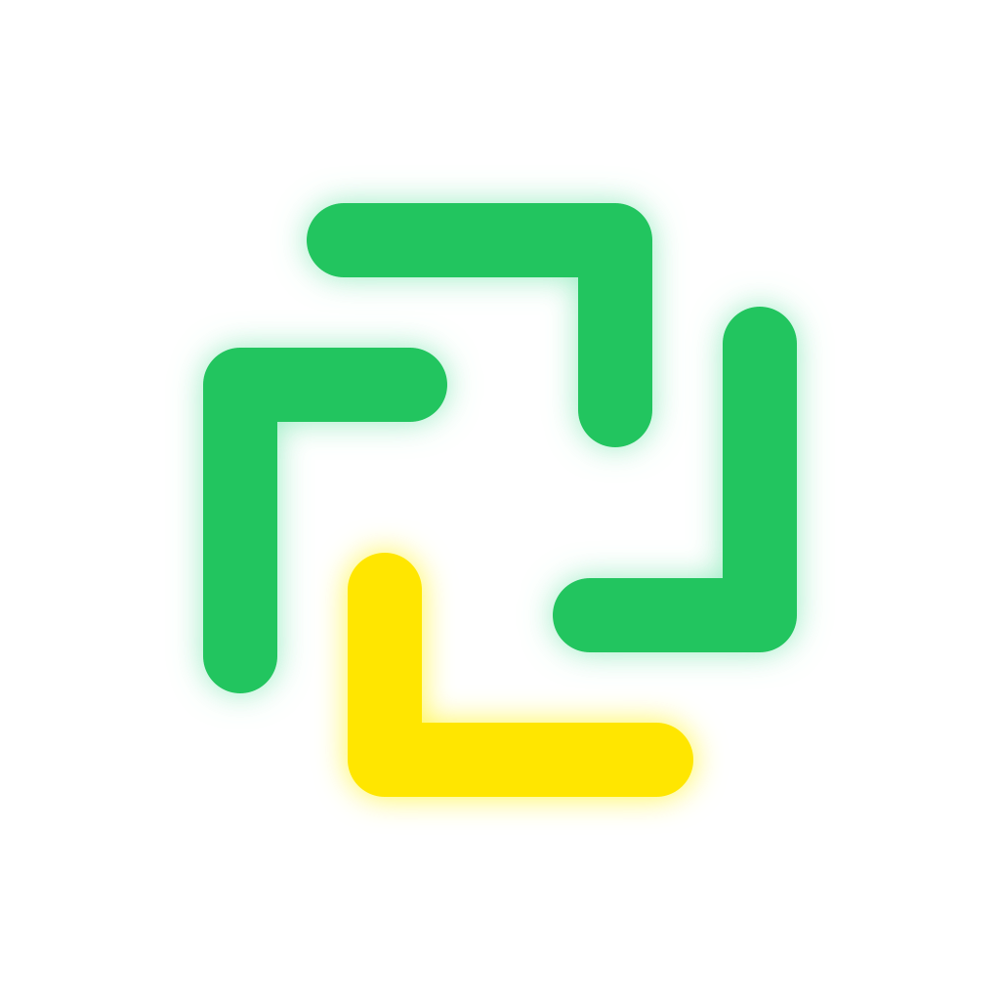
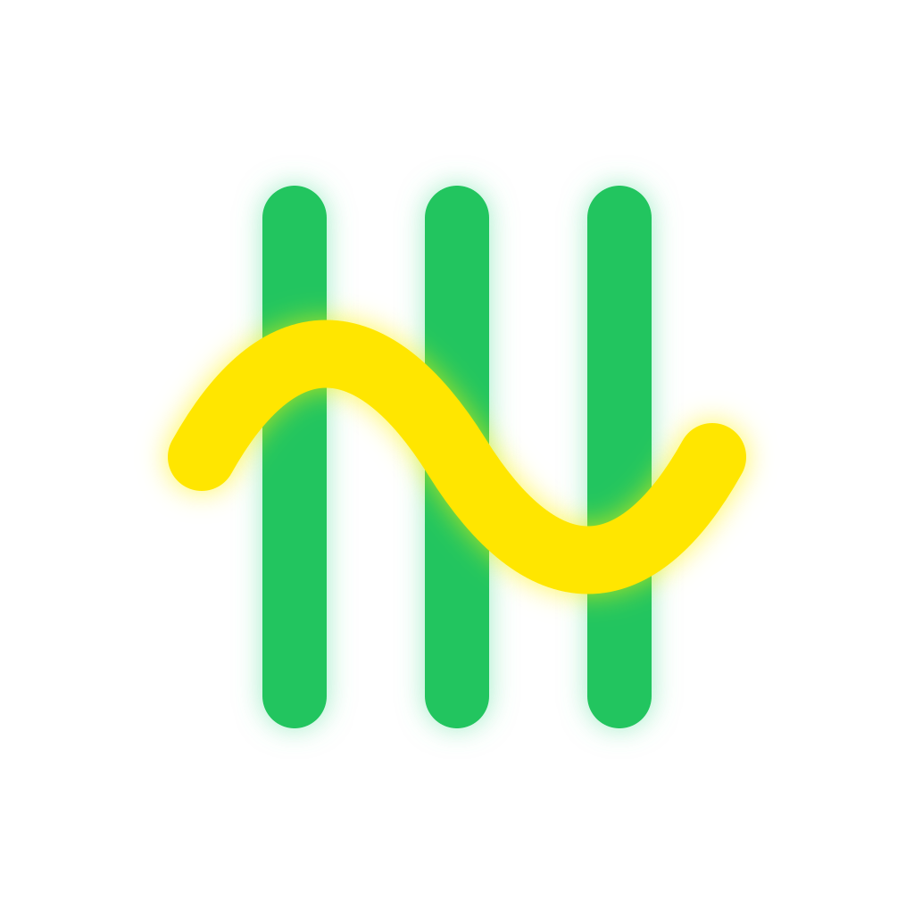
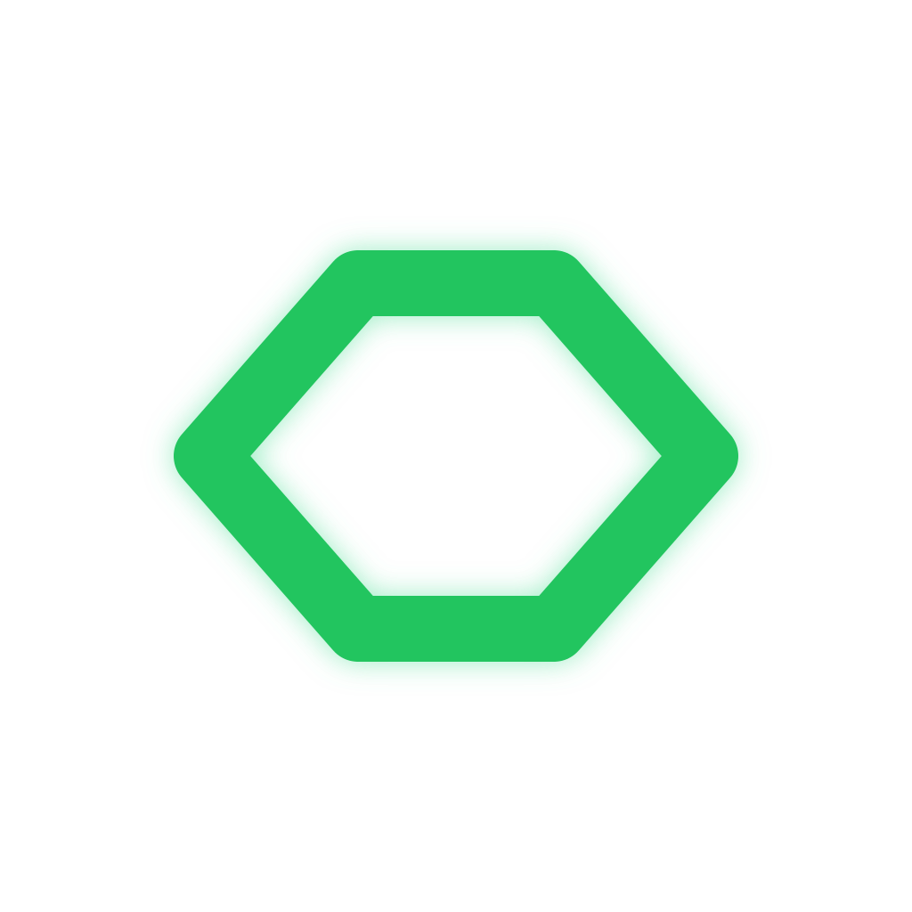

OPTION A
推荐
织结

64PX
32PX
16PX
四条圆角线向中心旋转，形成稳定的编织负形。与 Hook 的向外捕获框属于同一家族，但方向和语义明显不同。
Loom / App Icon Review / R1
沿用 Hook 的透明底、粗圆角结构、三绿一黄家族色彩与轻量辉光；当前文件只用于评审，尚未写入 Loom 正式图标资源。

四条圆角线向中心旋转，形成稳定的编织负形。与 Hook 的向外捕获框属于同一家族，但方向和语义明显不同。

三条绿色经线被黄色纬线穿过，直接表达 Loom 的“编排与交织”。语义最明确，但比候选 A 更偏工具符号。

以梭子的菱形轮廓承载一条黄色线程。结构最少、缩小后最稳定，也更像独立产品标志。